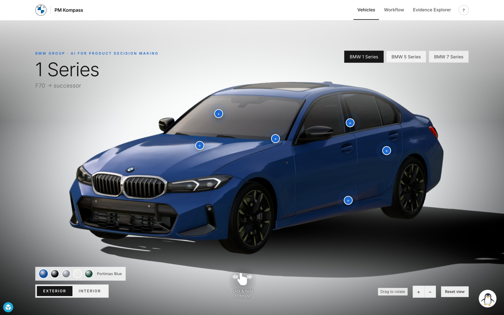
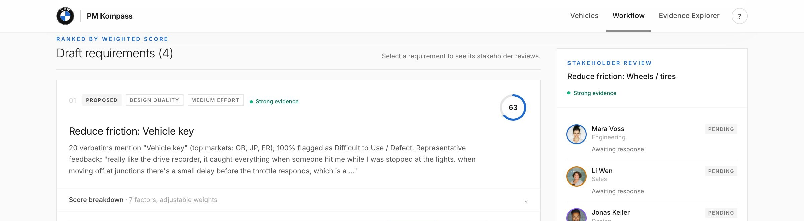
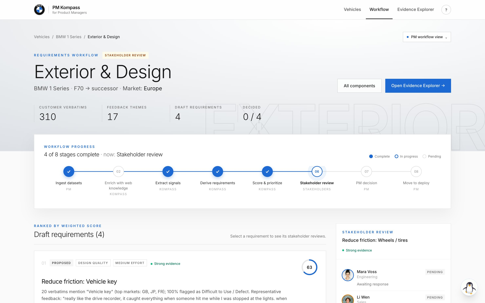
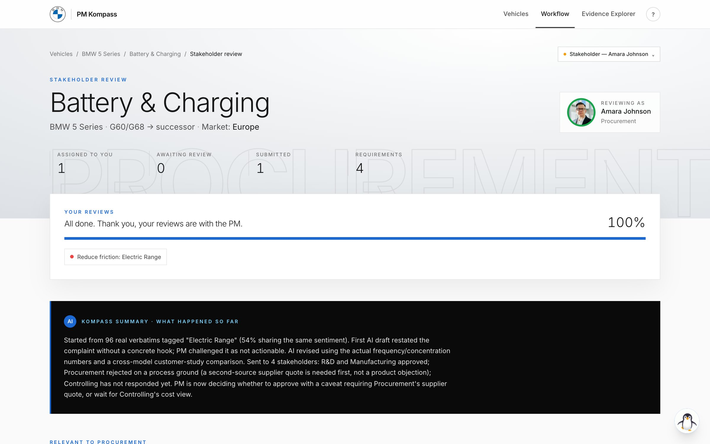
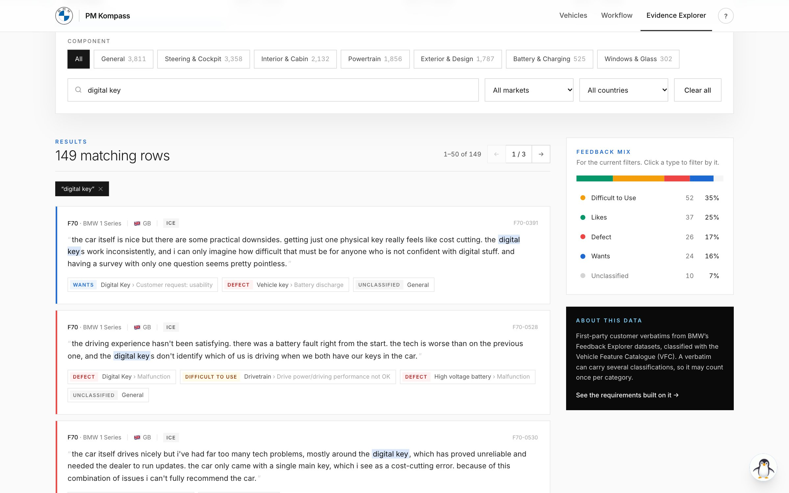

01 · The problem
02 · The solution

Live demo




04 · Why Marcus can trust it
05 · The impact
PM Kompass does the reading.
Marcus makes the call.
Appendix · How a requirement is prioritised
| Weight | Factor | How the value (0–100) is calculated | Source |
|---|---|---|---|
| 25% | Customer impact | Share of the theme’s feedback with the same sentiment | Customer verbatims |
| 15% | Signal frequency | Mentions ÷ the vehicle’s largest theme × 100 | Customer verbatims |
| 15% | Sales relevance | 50 + volume growth 2025→2030 × 150 | Sales volumes |
| 15% | Competitive gapAI | 50 + (best sibling score − our score) × 15 | Customer study |
| 10% | Strategic fitAI | Alignment with BMW strategy (70 if electrification / connected, else 50) | BMW Group Report |
| 10% | Feasibility | Inverse effort; neutral 50 until R&D reviews | R&D stakeholder |
| 10% | Evidence strength | 90 strong (≥15 verbatims) · 65 moderate (≥5) · 35 weak | Customer verbatims |
AI The AI refines these two judgment factors from the customer study and BMW Group Report, citing its sources. The formula baseline stays visible and every change is logged in the audit trail. All values are clamped to 0–100.